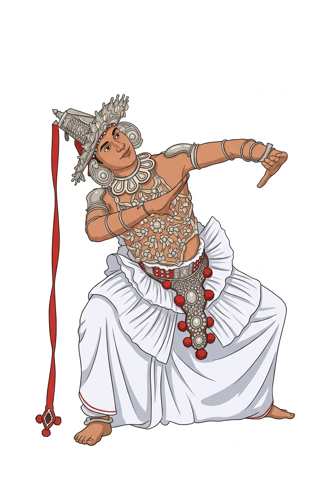
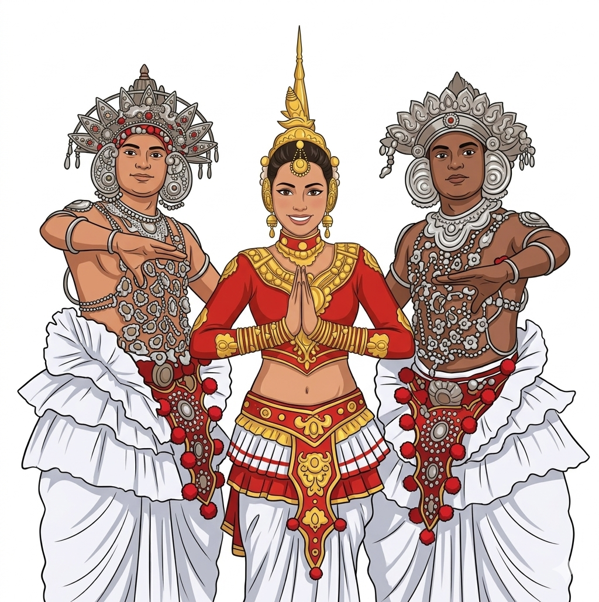
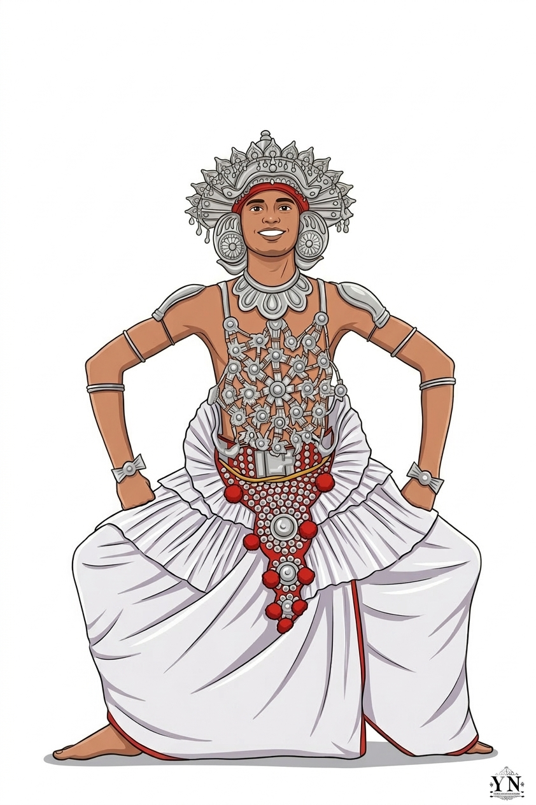
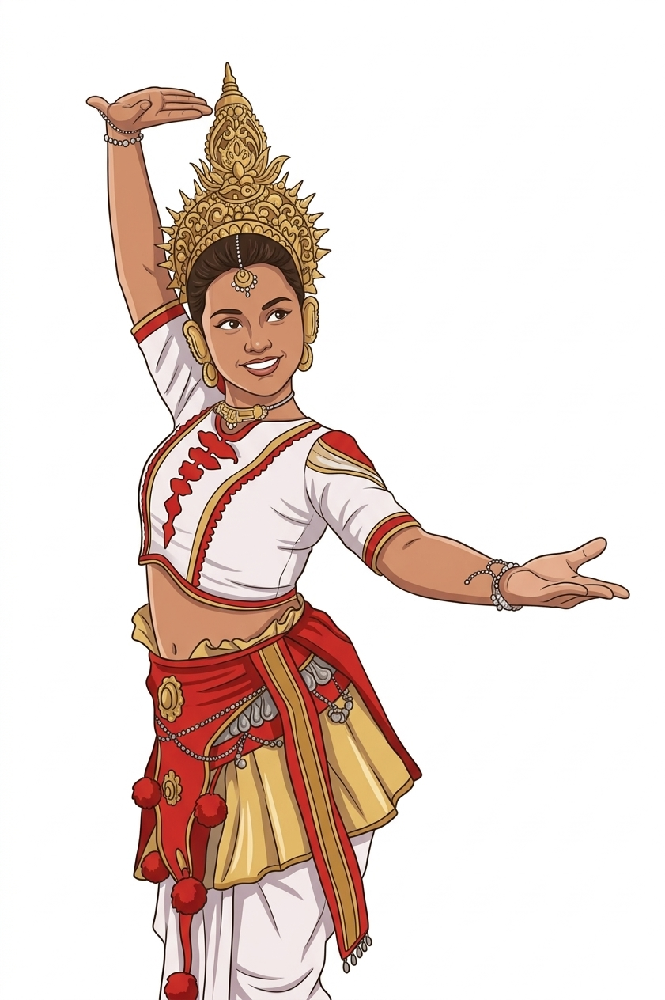
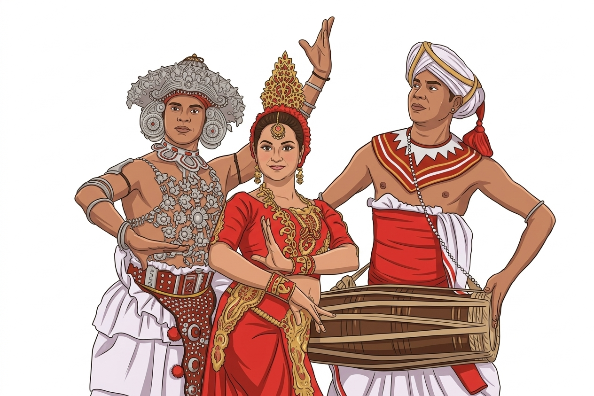
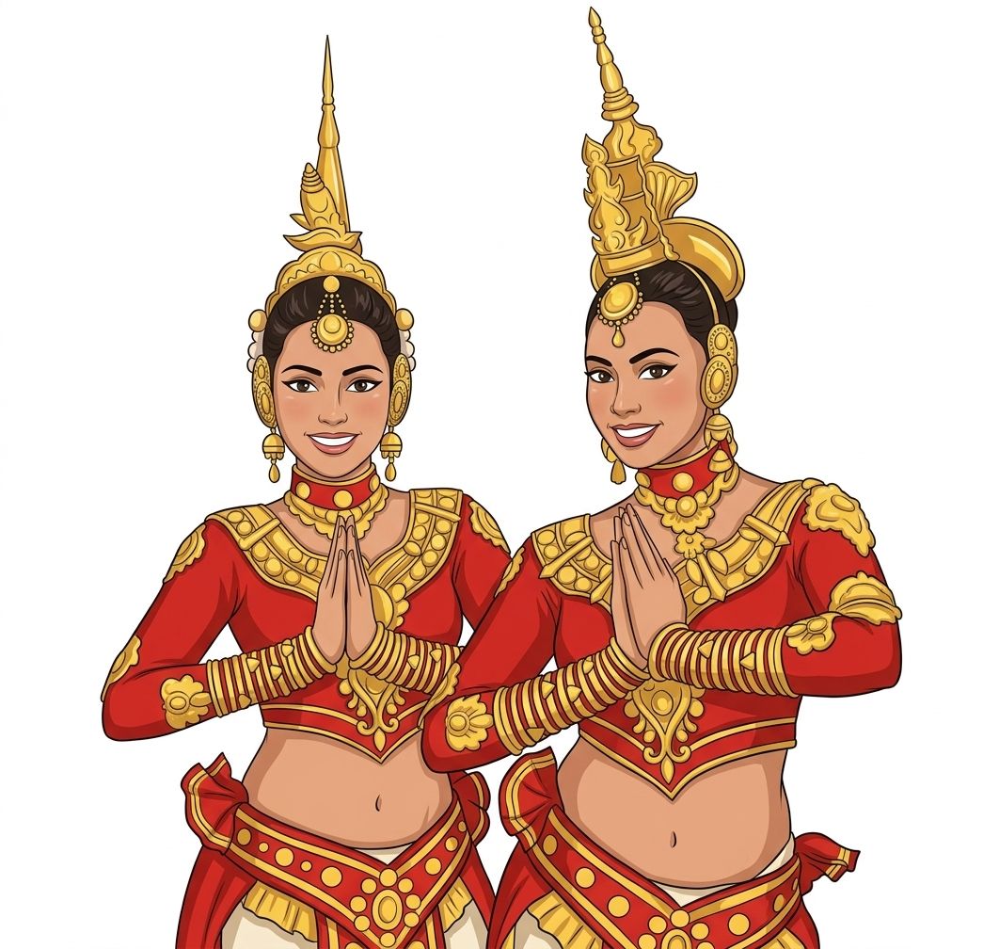
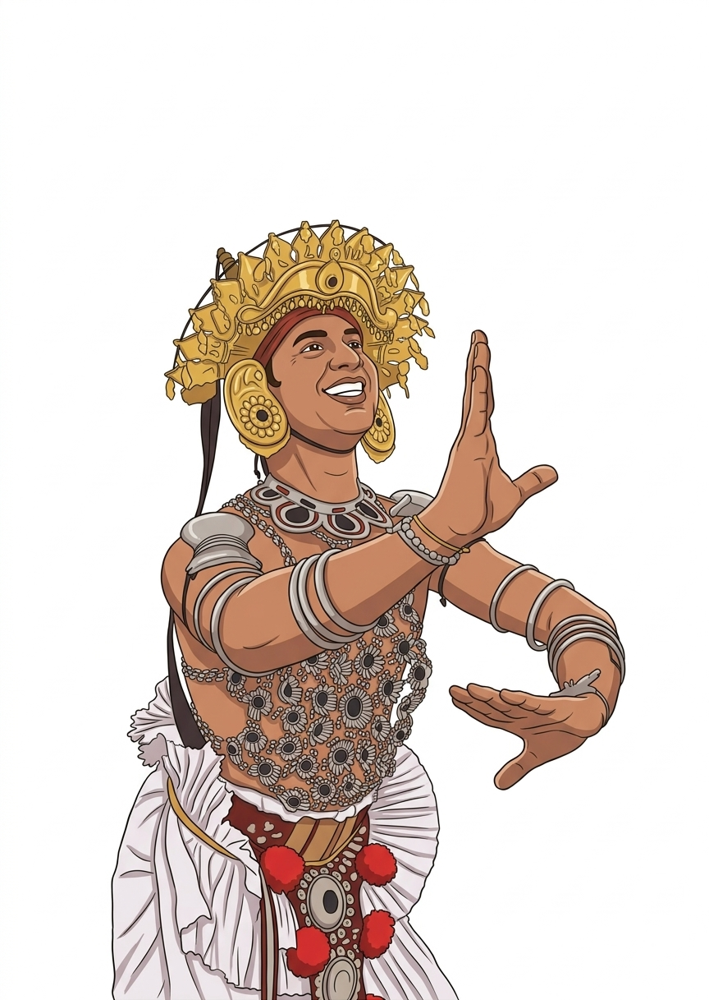
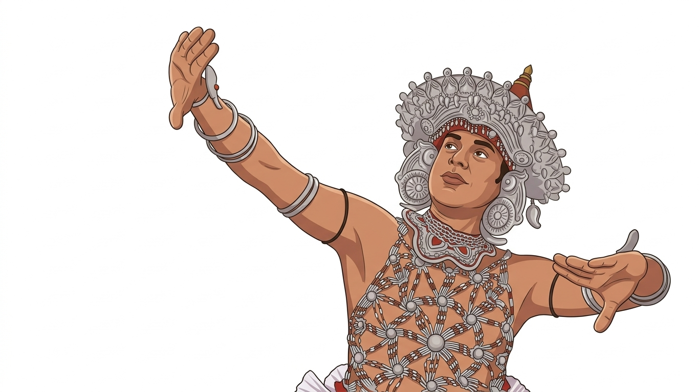
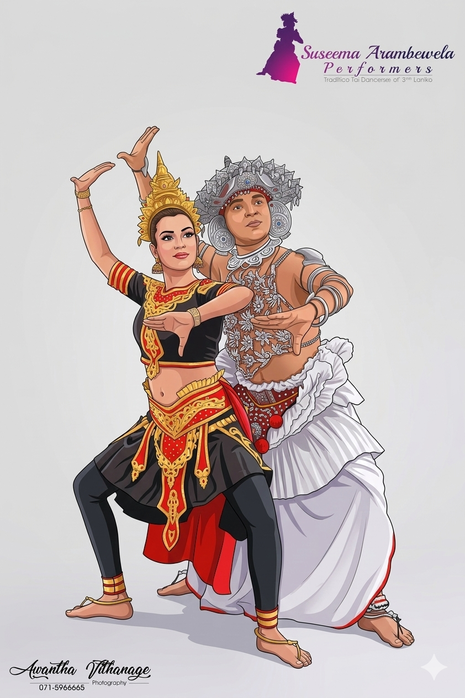
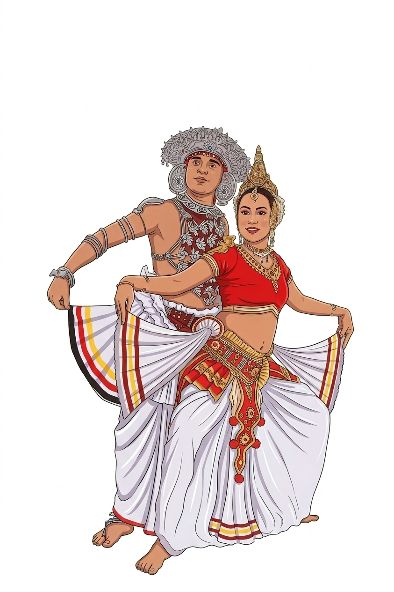

Interactive Real-Time Motion Tracking System for Learning
Sri Lankan Udarata (Kandyan) Traditional Dance
Udarata (Kandyan) dance is Sri Lanka's intangible cultural heritage, traditionally transmitted through the guru–shishya method. Without real-time feedback during independent practice, subtle errors in posture, gesture, and rhythm go unnoticed — threatening both the learner's progress and the authenticity of the art form.
Students practice independently outside class hours without any corrective feedback, causing errors to become habitual.
Skilled Kandyan dance instructors are scarce in rural and remote areas, making consistent mentorship difficult to obtain.
Existing motion tracking systems are built for Western dance forms. No tool captures the specific biomechanics of Udarata dance — Mandiya posture, Vattam rotations, rhythmic stamping.
Without accurate digital archiving, the precise movement vocabulary of Kandyan dance risks being lost across generations.
A webcam-based interactive learning system that captures full-body skeletal motion in real time, compares it against expert Kandyan dance reference models, and provides instant corrective feedback — all using a standard RGB webcam, no special hardware needed.
Captures 33 three-dimensional body landmarks using MediaPipe Pose from a standard 1080p webcam at 30–60 FPS.
Dynamic Time Warping algorithm compares learner movement sequences against expert Kandyan dance references — tolerant of speed differences.
All coordinates are normalized relative to the hip midpoint, making analysis independent of height, camera distance, or position.
Live accuracy score (0–100%) with skeletal overlay visualization. Guidance like "Increase Knee Bend" or "Align Shoulders" displayed in real time.
Pre-recorded expert Kandyan dancer sequences stored as normalized 3D landmark trajectories — the ground truth for comparison.
FastAPI backend + browser-based frontend. No installation needed — runs entirely in the browser with a webcam.
Explore the system interface, pose tracking overlays, accuracy scoring, and feedback visualization across different Udarata dance sequences.










Watch the system track Udarata dance movements in real time, compare against the expert reference, and generate a live accuracy score.
Real-time 3D body landmark detection
Core backend development language
Video capture and frame processing
Data normalization and analysis
Dynamic Time Warping sequence matching
High-performance WebSocket backend
Browser-side pose capture & UI
Euclidean distance computation
This system is grounded in rigorous academic research combining computer vision, kinesiology, and cultural heritage preservation.
Design Science Research (DSR) approach. Expert Kandyan dancers recorded performing foundational sequences. MediaPipe extracts 33 3D landmarks per frame. Hip-Center Normalization ensures position invariance. FastDTW compares learner vs expert sequences. Pre-test / Post-test statistical validation using paired t-test.
Recorded certified Udarata dance practitioner performing Mandiya, Vattam, and rhythmic stamping. Extracted & normalized 3D landmark trajectories as ground truth dataset.
Real-time webcam capture → MediaPipe landmark extraction → Hip-Center Normalization → 30-frame sliding window buffer → DTW pattern matching against expert library.
Rule-based layer validates Kandyan-specific constraints: Mandiya knee flexion depth, arm symmetry, shoulder alignment, spine verticality during stamping sequences.
Optimized for <100ms latency. Runs on standard laptops without specialized hardware. Web-based deployment via FastAPI + WebSocket architecture.
Two participant groups (control vs experimental). Paired t-test statistical analysis to measure improvement in movement accuracy over traditional video-based learning.
Beyond the academic prototype — a clear path to real-world deployment as a technology-assisted training platform for traditional dance education in Sri Lanka and beyond.
Access the full research documentation, proposal report, and source repository for academic review and collaboration.